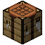

Terminals and access: pages
Terminals and access
Access and Fabrication Terminals
The Access Terminal and Fabrication Terminal cable parts, and the terminal screen every terminal shares - search, sorting, tabs, taking and storing, and crafting requests.
On this page
The  Access Terminal is the first terminal you make: a screen on a cable that shows everything your network stores. The
Access Terminal is the first terminal you make: a screen on a cable that shows everything your network stores. The  Fabrication Terminal is the same terminal with a 3x3 crafting grid underneath. Both are cable parts, not blocks: they mount on the face of a cable, or on the face of any block through an invisible holder. There is no standalone terminal block (the Terminal Desk is a different thing).
Fabrication Terminal is the same terminal with a 3x3 crafting grid underneath. Both are cable parts, not blocks: they mount on the face of a cable, or on the face of any block through an invisible holder. There is no standalone terminal block (the Terminal Desk is a different thing).
encodedlogistics:access_terminal

encodedlogistics:fabrication_terminal
Mounting a terminal#
- On a cable: use the terminal on the side of a cable where you want the screen. It faces outwards from that side. This works while sneaking too, so you can mount one next to a chest without opening the chest.
- On a block: use the terminal on any block's face. If a cable runs in front of that face, the terminal goes on that cable; otherwise it is mounted against the face on its own. A terminal mounted on a block is only on a network when that block is itself part of the network (a Drive Bay, say). On an ordinary block it stays offline.
- Removing it: sneak-use it with an empty hand, use a wrench on it, or mine it. It drops as an item, and a Fabrication Terminal drops whatever was in its crafting grid with it.
See Cable parts for how parts share a cable and what they cost.
A terminal uses storage.terminalLanes (default 1) lanes and drains storage.terminalDrain (default 0.5) FE/t. Its screen lights up while it is online, meaning its network is powered and it got its lane. Right-click it to open it.
Screenshot needed
An Access Terminal on the side of a network cable, lit, with a Drive Bay and Network Controller in view
docs/site-src/images/terminals/access-terminal-mounted.png · 1600x900
The terminal screen#
Every terminal that browses storage uses this screen: the Access and Fabrication Terminals, the Rack Consoles and the Handheld Terminal.
Screenshot needed
An open Access Terminal with a few dozen item types, the toolbar tab on the left visible, one item hovered to show its tooltip
docs/site-src/images/terminals/access-terminal-screen.png · 1280x720
From the top down:
- The title bar with the search field.
- The grid of everything on the network. Counts are drawn small and shortened (950, 1.2K, 34M, 5.1B). Hover an entry for its full name, amount and details.
- The scrollbar at the side. The mouse wheel scrolls the grid.
- Your inventory below.
- The toolbar, on a tab at the left edge, with the buttons described under Toolbar settings.
The grid is not made of real slots. The server sends the network's contents a few times a second and your clicks are sent back as requests, so a busy network's counts update in place.
While the mouse is over the grid, the order holds still: counts change where they are, an item that runs out leaves a gap, and new items are added on the end, so nothing jumps out from under the cursor. The grid is sorted afresh once the mouse leaves it, or when you change the search or a toolbar setting.
Searching#
Type in the search field to narrow the grid. The search keeps its text for the rest of the session, across terminals.
| You type | It matches |
|---|---|
iron | Names containing "iron" (any case) |
@create | Things from mods whose id contains "create" (for a gas, its source mod too) |
#ingots | Items and fluids with a tag containing "ingots" |
While the search field has focus it takes every key except Esc, so typing an "e" doesn't close the screen.
With JEI installed, the toolbar's search mode button can keep the terminal's search and JEI's search bar in step, both ways. Without JEI the button stays on the standard mode.
Tabs: items, fluids, pressurized and energy#
The type tab picks what the grid shows:
| Tab | Shows |
|---|---|
| All | Everything below in one grid |
| Items | Items only |
| Fluids | Fluids only |
| Pressurized | Gases only. Gases come from Arcforge; without it nothing is ever stored here |
| Energy | One entry: the FE stored on the network's Energy Storage Drives |
The energy entry shows only when the network has Energy Storage Drives. Its tooltip gives the FE stored against the drives' capacity, and the network's generation and usage. The controllers' and Capacitor Banks' own buffers aren't storage, so they aren't counted here (see Power).
Taking and storing#
The clicks work as they do in other storage mods:
| Action | With an empty cursor | With an item on the cursor |
|---|---|---|
| Left-click an entry | Takes a stack | Puts the stack in |
| Right-click an entry | Takes half a stack | Puts one in |
| Shift-click an entry | Moves a stack into your inventory | |
| Shift-right-click an entry | Takes one onto the cursor | |
| Shift + wheel up over the grid | Puts one in | |
| Shift + wheel down over an entry | Takes one onto the cursor | |
| Double-click a stack in your inventory | Puts every stack like it in |
Clicking a gap between grid squares with an item held also puts it in.
Fluids and gases. On the Fluids or Pressurized tab, clicking with a filled container pours it into the network. Clicking a fluid entry with an empty container fills it (right-click: one bucket's worth), and shift-clicking fills a container in your inventory. On the other tabs a filled container goes in as an item.
Items on tape. Items archived to an LTO tape show in the grid with the rest, counted together, with a tape badge in the corner. If you take more of an item than is on hot storage, you get what's hot straight away and the rest is recalled from tape: a progress bar runs along the entry, and the items go into your inventory as they come back. The tooltip says how long a recall would take. See Hot and cold storage and LTO tapes and Tape Libraries.
Crafting requests#
Things the network can craft show with "Craft" in place of a count when it has none of them. To ask for a craft, middle-click or Ctrl-click a craftable entry, or just click one the network has none of. You pick an amount, see the plan (what it has, what it will make, what is missing, and which Scheduler will run it), and start the job. That needs the Craft permission. The plan screen, Job Status and job toasts are on the jobs page.
Whether craftables with a count of zero show all the time, or only while you are searching, is a toolbar setting.
Toolbar settings#
The toolbar's buttons are saved in your client config file (encodedlogistics-client.toml, section terminal), so they are the same in every terminal and last across restarts. Each change is saved at once.
| Button | Setting | What it does |
|---|---|---|
| Sort mode | terminal.sortMode (default NAME) | Sort by name, amount (COUNT) or mod (MOD, then by name) |
| Sort direction | terminal.descending (default false) | Ascending or descending |
| Craftables | terminal.craftablesAlways (default true) | Show craftable things the network has none of always, or only while searching |
| Grid height | terminal.height (default FILL) | Small, medium, tall, or fill the window. Changing it lays the open screen out again |
| Type tab | terminal.typeTab (default ALL) | All, items, fluids, pressurized or energy |
| Search mode | terminal.searchSynced (default false) | Standard, or synced with JEI's search bar |
The client file's other sections hold the job toasts and the audio options; the full list is in the config reference.
When it can't reach the network#
If the terminal's network is unpowered, short of lanes, or the terminal isn't on one at all, the grid says so instead of showing items. Fix the network and the grid fills again; you don't need to reopen it.
The Fabrication Terminal#
The Fabrication Terminal adds a 3x3 crafting grid and its result between the storage grid and your inventory. The grid holds real items, kept in the part, so they stay there when you close the screen.
Screenshot needed
An open Fabrication Terminal with a crafting recipe laid out in the 3x3 grid and its result shown
docs/site-src/images/terminals/fabrication-terminal-screen.png · 1280x720
- Crafting: take the result to craft it. Each grid slot that runs out is refilled from the network with the same item, so you can keep taking results while the network has the ingredients.
- Shift-click the result to craft as many as fit in your inventory.
- The clear button puts the grid's items back into the network (or into your inventory when the network is full).
- JEI: the recipe transfer button fills the grid from the network first, then from your inventory.
Putting items into the grid from the network takes Extract; putting them back takes Insert.
Permissions#
On a network with a Firewall:
| To | You need |
|---|---|
| Open the terminal | View |
| Put things in | Insert |
| Take things out | Extract |
| Ask for a craft | Craft |
| Mount the terminal on a cable | Build |
If you lack one, the action bar tells you which. Without a Firewall everyone may do everything.